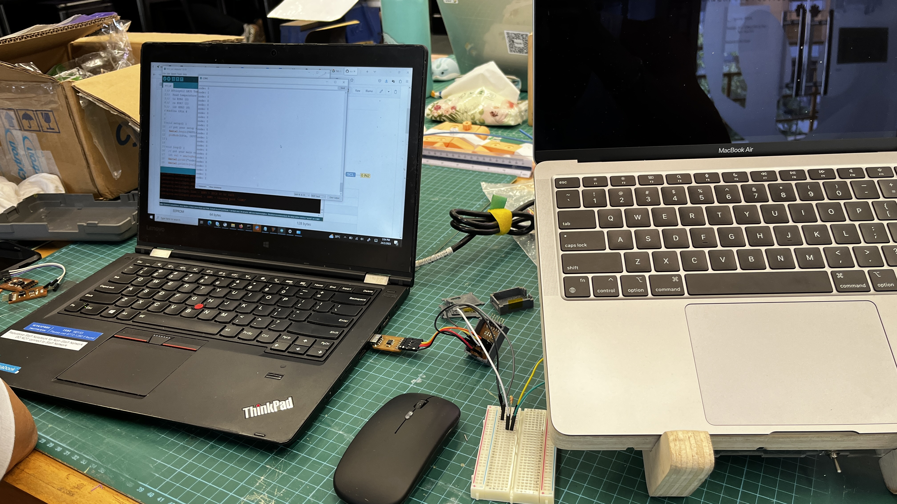
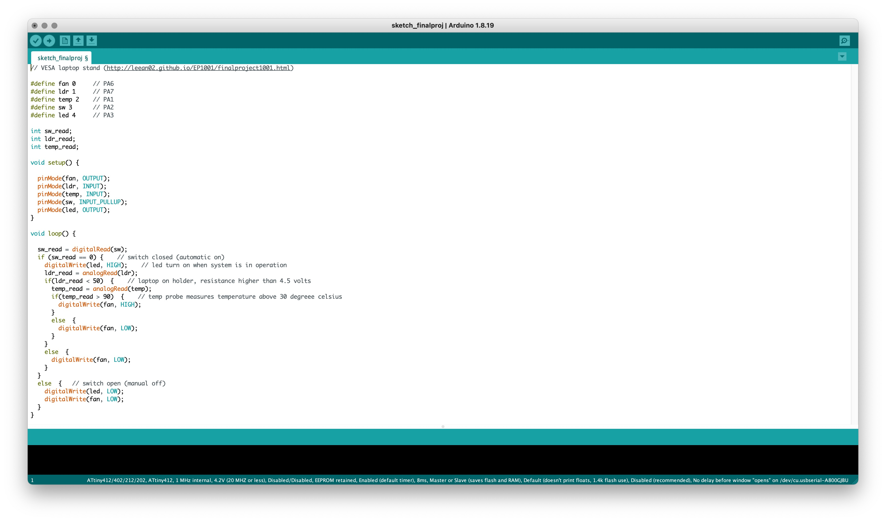
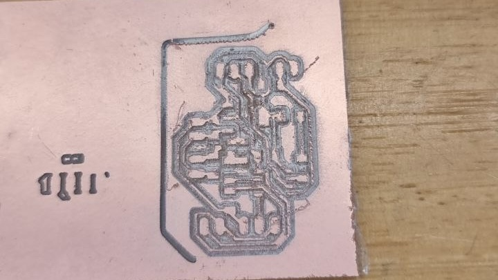
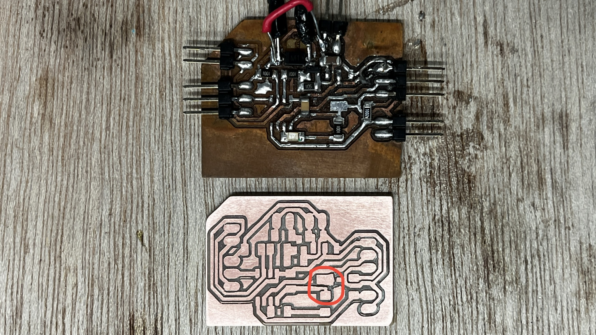
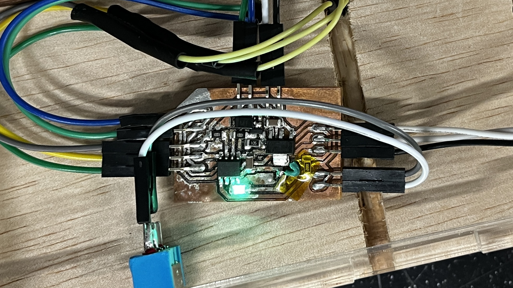

VESA Laptop Holder
I will be documenting the process of making my EP1001 final project here. The raw files can be found below as I go through what I have done and learned along the way.
CDIO Framework
I will be following the same structure of documentation as I have done in my EP1000 Final Project.
Conceive
I want to be able to mount my laptop onto a monitor arm for namely a few reasons:
- To save precious table space and make cleaning the table a little less fussy.
- To have the laptop display be elevated and off to the side of my main monitor. This would make it more ergonomic especially when working for long hours.
I had previously attempted to make a laptop stand with the VESA mount holes on the base of the stand so as to be able to attach it to my monitor arm. This however was a bad solution as not only did the base of laptop stand get in the way of the monitor arm movement, it was also made from 3 layers of lasercut plywood held together by glue; which is not very structuraly strong. Hence since I had the opportunity to learn 2D flatbed CNC in EP1001, I decided to work on this project of mine again.
Design
As part of the EP1001 final project requirements, which are to include:
- 2D and/or 3D designed part(s)
- subtractive manufacturing part (cnc)
- may include:
- molded or cast part(s)
- 3d printed part(s)
- laser cut part(s)
- an embedded microcontroller that I designed & fabricated
- input and/or output device(s) that interacts with user
- embedded program
I decided to have it such that the laptop holder will have more functionality as well. The different functionality includes:
- Be able to connect to a VESA monitor arm and not restrict the monitor arm movement.
- Have a cooling fan that can automatically turn on when it detect that there is laptop placed on the laptop holder and when a certain temperature threshold is reached.
- Have a master switch to override the automatic functionality in situation where I do not want the fan to be on.
To solve the detection of the laptop on the holder, I decided to use a Light Dependent Resistor(LDR). For temperature sensing, I decided to use the LM35 Temperature Sensor. I also decided to include an LED so that I can have it turn on when the master switch is turned on so I will know when the automatic functionality in operating. With this, I came up with the design:
I then designed the PCB using the ATtiny412 as I only had 3 inputs and 2 outputs which would allow me to fully populate all of the microcontroller pins. I needed to include a voltage regulator (AMS1117) to step the power down from the 12 volts input to 5 volts for the microcontroller and the sensors. I needed the 12 volts input as the fan needed 12 volts to operate. I also needed an amosfet (AO3400) to toggle the fan on and off.
I had initially used an Arudino Uno to see the analog read out of the sensors. However when my project was still not working and Mr Steven had helped me checked that my code was written correctly, he helped me by using his own ATtiny412 programmable board to get the analog read out to see if there were any difference. Ultimately, I just trailed and error the sensors treshold in my code until my fan was triggered in the expected working conditions.
|  |  |
Implement
Now comes the implement stage where I digitally fabricate my ideas to life.
On top of cnc manufacturing my pieces and 3D printing my adapter, I also laser cut out the grills and cover as well as milled out my PCB. While milling out my first PCB outline, the copper board came loose and I had to saw the outline of the board instead. I also experienced many problems while soldering my PCB which resulted in it having to go through many "surgeries". Ultimately however, I had to redo my board entirely.
|  |  |
As I did not have enough time to redesign my board, I had decided to just cut out a track in the old design which was one of the reasons why the board was not initially working and solder a wire to the two tracks again.
|  |  |
Operate
As mentioned on top, this new laptop holder was designed to replace my laptop stand. Hence when used as a laptop stand, it put my laptop up in a very similar position as my previous laptop stand did.
It can be used as either laptop stand or a VESA laptop holder and mounted on a monitor arm.
Takeaway
I learned a great deal while embarking on this project. I met a lot of unexpected setbacks and hurdles which made what I thought was a relatively simple project to become a really difficult and time consuming one. One of the first mistake I learned very quickly on was project planning. When I was modelling my laptop holder, I had initially set the wood cnc material thickness to be 18mm. With poor hindsight and lack of experience, I went ahead to laser cut out my acrylic grill and cover not knowing that when I had to later adjust my material thickness dimension to 24.5mm, it would result in my original laser cut pieces not fitting correctly. This happened because I lacked proper planning and tried to rush and do my work ahead of time. Secondly, I learned a better way to fit the laser cut pieces to the cnc pieces better. I had initially designed it to fit like a puzzle piece, similar to what I had learn in my Music Box project. However, I learned that the cnc could not mill out the small pockets very well but the piece that was fitted in through the slot fitted in very well. I also made a very careless mistake when manufacturing my part. I failed to mark out the parts of the board that were unusable which resulted in one of my piece having a weird aesthetic defect as the underside of the board had been cut before.

Due to time contrain, I was unable to recut my board and had to leave it be. I had another classmate who had not started manufacturing his pieces and I did not want to hog up the machine when it was my own oversight that made this mistake. Thirdly, during my PCB design, I failed to realise that the AMS1117 footprint I used was incorrect and this was due to me not checking the component data sheet. I did not realise that there were more than one footprint for the same chip. This caused me to burn my AMS1117 and board many times as it had short itself. Addtionally, I made a mistake to not connect my fan to one of the Pulse Width Modulation (PWM) pin. I had originally wanted to fan to slowly spin up depending on the temperature read out however as I was unfamiliar with what I was doing, I ended up connecting the fan to a pin without PWM. Finally, I learned that surface mounted soldering was a lot easier if I were to first tin the pad with solder and then use a hot gun to place the components instead. If I had learned this earlier, I would have made lesser mistake which would have prevented me from burning off the copper on the board. I had to do a lot of "surgery" and troubleshooting on a what could have been a 30 minutes job. I was also having erroneous input of my switch and output of my led and fan. I later learned that my board could have been soldered poorly ( ie. cold joints or poor contact ) resulting in the unresponsive switch or flickering led. This was normally resolved by reflowing the solder by heating up the board again with the heat gun to allow all the solder to melt and cool again. At least now through this project and the many problems I faced, I am now equipped with the experience and knowledge to help me fabricate these parts again quicker and more efficiently. I also made a revision design model base on what I have learned during the fabrication process. It would include a bigger (140mm) fan that can operate on 5V allowing me to skip out on the power regulator completely. It is also designed such that the acrylic cover would slide in instead of being glued on. I hope to be able to make this better and updated designed during my last term holiday in SP.
BOM
Quantity |
Description |
Cost |
|---|---|---|
1 |
Normal Plywood 25mmx1120mmx1600mm |
SGD 120.05 |
1 |
Clear Acrylic 3mmx300mmx500mm |
SGD 26.99 |
1 |
3D Printing filament |
SGD 19.90/spool |
1 |
ATtiny412 mircochip |
SGD 0.89 |
1 |
SMD AMS1117 5V Voltage Regulator |
SGD 0.61 |
1 |
SMD NMOSFET AO3400 |
SGD 1.62 |
1 |
Switch |
SGD 1.10 |
1 |
SMD LED |
SGD 1.83 for long cut of 50 pieces |
3 |
SMD 1k Resistor |
SGD 35.90 for 1 long cut tape of resistor |
1 |
SMD 10k Resistor |
SGD 35.90 for 1 long cut tape of resistor |
1 |
SMD 1M Resistor |
SGD 35.90 for 1 long cut tape of resistor |
2 |
SMD Capacitor Unpolarised |
SGD 0.24/Capacitor |
1 |
SMD Diode |
SGD2.01 for 1 long cut of 100 pieces |
14 |
SMD Right Angle Male Header ( 2 pieces of 3 pin header 4 pieces of 2 pin header ) |
SGD 4.35 for 1 row of 40 pins |
5 |
Female to Female Dupont cables |
SGD 3.00 for 40 pieces |
9 |
Male to Female Dupont cables |
SGD 3.00 for 40 pieces |
Fabrication Techniques
Technique |
Fabrication component |
|---|---|
CAD |
VESA Adapter, Laptop Stand & Acrylic Cover |
CNC Milling |
Laptop Stand |
3D Printing |
VESA Adapter |
Laser Cutting |
Acrylic Cover ( Grill & Electronic Compartment ) |
Eagle |
Schematic & PCB Design |
PCB Milling |
PCB Board |
Processing System |
ATtiny412 |
Input Devices |
Light Dependent Resistor, Temperature Sensor ( LM35 ), Switch |
Output Devices |
LED & 12V DC Brushless Motor Fan |
Power |
12V AC to DC Power Supply |
RAW Files
You can find all my RAW files here: